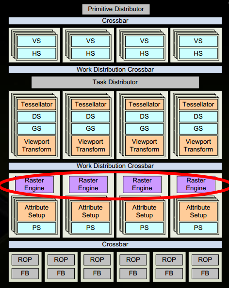
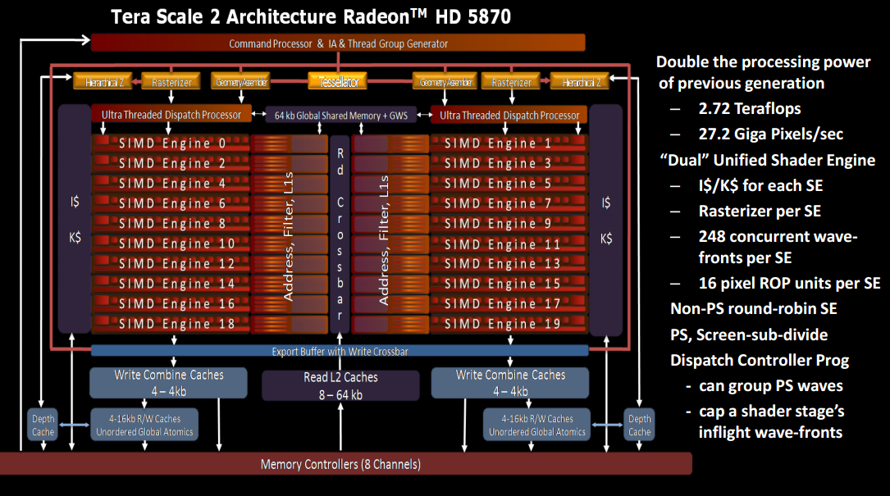
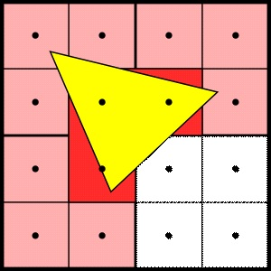
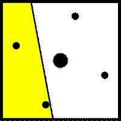

渲染管线之旅|08 像素处理之"fork"
在这一部分中，我们来谈谈像素处理的前半部分:dispatch和实际的像素着色。事实上，这部分是大多数图形开发者在谈到PS stage时所关心的内容。有关alpha blend和Late-Z的内容放到下一篇文章中去探讨。后面我们会看到，硬件上PS stage的设计相是对比较复杂的。这也是PS stage分成两篇来写的原因。在进入这个stage时，从raster或者early-z传入的信息包括：shader的像素坐标(实际上是小的四方块)和相关的覆盖遮罩。传入的三角形的顺序与上层软件应用程序提交的完全相同，我们在这里需要做的是将这个线性连续的工作流分配到数百个并行的着色器单元。等这些着色器单元返回结果后，我们就再将它们再合并到顺序存储的内存中。
从上面的描述中可以看到，这是典型的fork/join-parallelism示例。这篇文章我们要探讨的fork这部分内容，也就是将工作流分配给大量的着色器单元。下一篇在去看join合并阶段（将数百个流合并为一个流）。在进入到PS stage之前对于光栅化还有点内容需要补充一下，因为我刚才说我们在这里需要做的是将这个线性连续的工作流分配到**数百个**并行的着色器单元并不完全正确,因为在现代的设计中可能存在多个Raster的情况。
1. 从Raster开始并行
在我看来，我告诉你的在很长一段时间内都是正确的，但是这是一个管道的串行部分，一旦你在一个问题上抛出超过300个着色器单位，管道的串行部分就有成为瓶颈的趋势。
所以GPU的架构们开始使用多光栅的方式。Fermi GF100的架构中NVidia使用的是四个光栅化引擎。下图就是Fermi GF100的架构。 
AMD则是使用两个光栅化引擎，对于下图中的Tera Scala2，它有两个通用的Shader Engine，而每个Shader Engine都包含有一个光栅化引擎。

从NV的演示文稿中可以看到一些关于保持API顺序要求的注释。特别是，在光栅化/early-Z之前，你需要对Primitive进行排序，就像我上次提到的：在alpha blend之前这样做是行不通的。
Raster之间的工作分配是基于我们在early-Z和粗光栅化中看到的tile。帧缓冲区被划分为以tile为单位的区域，每个区域被分配给一个Raster。设置完成后，根据三角形的边界框来确定哪些三角形交给哪个Raster。大三角形（Cover住所有Raster）总是会被发送给所有的Raster。但是小三角形只会hit到一个小的tile, 因此只会被发送给拥有它的Raster。
这个方案的美妙之处在于，它只需要改变工作分布和粗光栅(遍历tile);只看到单个块或四边形(即从层次化Z向下的管道)的所有东西都不需要修改。 可能出现的问题是你现在是根据屏幕位置来划分作业; 当然这可能会导致光栅器之间严重的负载不平衡(想象一下在一个平铺中有几百个小三角形)。但是好的方面是，所有添加到管道的顺序约束(Z-test/write顺序，blend顺序)都会附加到特定的帧缓冲区位置，所以屏幕空间的细分工作不会破坏API的顺序——如果不是这样，平铺渲染器就不会工作。
2. 进一步并行
好吧，经过上面的探讨，输入给ps stage的确实不只是一个线性连续的工作流加上遮罩，这个工作流可能是2个也可能是4个。无论怎样，后续我们仍然需要将它们分配给数百个着色器单元。该是另一个派遣单位的时候了! 首先，这意味着需要另一个缓冲。这个缓冲的大小得多大呢？这和我们发送到着色器的批次有多大直接相关。这里我再一次用英伟达的数字，因为他们在白皮书中提到了这个数字。（AMD可能也在哪里声明了这些信息，但我不熟悉他们的术语，所以这里我们暂且不管它。）对于NVidia，分配到着色单元的单位是32个线程，他们将这个称之为 “Warp”。每个quad包含有4像素点(每个quad会打包给一个线程处理), 所以对于我们所说的着色器的批次问题，仅需要每次抓取从raster传入的8个quad缓存起来，然后将他们一同发送给着色器单元。（在pipeline flush或者切换的时候，这时候就会发送少于8个quad, 这也是没问题的。）
为什么我们会在一个着色器单元类去同时处理2x2的像素块而不是处理单独的像素呢？一个很大的原因就是导数。纹理采样器依赖于纹理坐标的屏幕空间导数来进行mip-map选择和滤波操作(我们在第4部分中谈到过)。并且，在shader model 3.0及以后版本中，同样的机制以求导指令的形式直接用于像素着色器。在一个quad中，每个像素在同一quad中具有一个水平和垂直邻居。这可以用来估计在x和y方向上的导数，使用有限差分(它可以归结为几个减法)。这给了一个非常有效的方法来得到倒数，这个代价就是：总是需要一次性对2×2像素进行着色操作。这在大三角形的内部没有问题，但这意味着25-75%的四边形的阴影工作被浪费了。这是因为quad中的所有像素，甚至是遮罩的像素，都被着色了。这对于为可见的quad像素生成正确的导数是必要的。不可见但仍然有阴影的像素被称为“辅助像素”。下面是一个小三角形的例子:

上图中的三角形与4个quad相交，但只在其中3个quad中产生可见像素。此外，在这3个quad中，只有一个像素被实际覆盖(每个像素区域的采样点被描绘成黑色的圆圈)——被填充的像素被描绘成红色的。在每个部分覆盖的quad中剩余的像素是辅助像素，用较浅的颜色绘制。这张图清楚地说明，对于小三角形，shading的像素总数中很大一部分是辅助像素，这引起了一些关于如何合并邻近三角形的quad的研究。然而，尽管这样的优化很聪明，但当前的API规则（DX/OpenGL）不允许这样的优化，当前的硬件也不允许这样做。当然，如果硬件供应商在某种程度上认为浪费在quad上的shading工作是一个严重的问题，这很可能会改变这个现状。
3. 属性插值
像素着色器的另一个特色是属性插值，所有其他的shader stage, 到目前为止我们看到的(VS)和那些还没有谈论的(GS、HS DS, CS)，他们的输入要么是从前面的Shader stage中得到，要么就是从内存中得到, 但是PS在此之前有一个额外的插值。在前面讨论Z时，我已经讨论过一点，那是我们看到的第一个插值属性。
其实其他插值属性的工作方式也大致相同。在三角形设置的时候会计算得到平面方程(gpu可以选择推迟这个计算, 例如, 直到知道至少有一个三角形的tile层次z检验通过,但不得关注我们这里)，然后在进行像素着色的时候,有一个独立的单元使用quad的像素位置和平面方程计算并执行属性插值。这里需要指出一点，虽然曾经有专门的插值器，但现在的趋势是让它们返回质心坐标，代入平面方程。实际的计算(每个属性两次乘法)可以在着色器单元中完成。
所有这些都不足为奇，但是还有一些额外的插值类型需要讨论。首先，有“常量”插值器，它在整个图元中都是常量，并从“主要顶点”(在图元设置过程中确定的顶点)获取每个顶点属性的值。硬件要么有一个快速路径，要么只是建立一个相应的平面方程; 两种方式都没毛病。
然后是无透视插值（no-perspective interpolation）。这通常会建立不同的平面方程; 对于基于X的插值，通过将每个顶点的属性值除以相应的w来建立透视校正插值的平面方程，对于质心插值，通过构建三角形边向量来建立平面方程。然而，对于基于X的插值，在不将每个顶点的值除以相应的w的情况下，当建立平面方程时，非透视插值属性的值是最有效的。
4. “质心”插值的trick
接下来，我们有“质心”插值。这是一个标志，不是一个单独的模式。它可以与透视和无透视模式相结合(但不能与常量插值结和，因为这是毫无意义的)。它的命名也很糟糕，而且除非启用了多重采样，否则它是没有用的。对于多重采样的情形下，这是一个解决实际问题的有点粗糙的解决方案。问题是，在多采样中，我们在光栅化器的多个采样点上评估三角形的覆盖率，但我们只对每个像素做一次实际的着色。纹理坐标等属性将被插值到像素的中心位置，就好像整个像素都被原语覆盖了一样。这可能会在以下情况下导致问题:

这里，我们有一个被图元部分覆盖的像素，四个小圆描述4个采样点(这是默认的4x MSAA模式)，而中间的大圆描述了像素中心。注意，大圆在图元之外，任何“插值”的值实际上都是线性外插的结果。如果应用程序使用纹理集，就会出现一个问题。根据三角形的大小，像素中心的值可能会非常远。质心插值就可以解决了这个问题。GPU获取图元覆盖的所有样本，计算它们的质心，并在那个位置采样。通常，这只是一个概念模型，gpu可以自由地做不同的事情，只要他们为采样选择的点在图元之内。
如果您认为硬件不太可能真正计数所覆盖的样本，那么将它们相加，然后除以计数，然后加入到一起。下面是实际发生的情况:
- 如果所有的采样点都覆盖了原语，那么就像往常一样在像素中心(即所有合理的采样模式的所有采样位置的质心)进行插值。
- 如果不是所有的样例点都覆盖这个三角形，硬件会选择其中的一个样例点，并在那里进行计算。所有被覆盖的样本点(根据定义)都在图元内，因此这也是有效的。
这种选择过去是任意的(即留给硬件);我相信DX11现在已经确切地规定了它是如何完成的，但这更多的是在不同的硬件之间获得一致的结果，而不是API用户真正关心的事情。如上所述，对于部分覆盖像素的quad，它还会搞砸导数计算。能解释的就是它可能是工业界的修补方案，但它仍然是修补方案，没有什么理论依据。
最后(DX11中的新特性!)有一个“拉模型”属性插值。常规的属性插值是在像素着色器开始之前自动完成的;拉模插值添加了实际的指令，做插值到像素着色器。这允许着色器计算它自己的位置来采样值，或者只在一些分支中插入属性，而不在其他分支中。它可以归结为像素着色器能够发送额外的请求到插值单元，而着色器正在运行。
5. 实际的着色器体
一般的着色器原则在API文档中有很好的解释，所以我不打算讨论单个指令是如何工作的。然而，关于像素着色器的执行还有一些有趣的细节值得讨论。
第一个是:纹理采样! 在第4部分中我们已经花了很长时间讨论纹理采样了。但那是纹理采样方面的事情，如果你还记得，有一点：纹理的cache miss是频繁的，采样器通常被设计为维持至少一次错过主存的请求(16-32像素，记住!)而不会stalling。上百个cycle, 如果闲置下来，这对于ALUs来说是一个巨大的浪费。
所以着色单元实际上做的是在他们发布了纹理样本之后切换到不同的批处理。然后当批处理发出纹理样本(或完成)时，它切换回先前的批处理并检查纹理样本是否存在。只要每个着色器单位有一些批次，它可以在任何给定的时间工作，这就充分利用了可用的资源。但是，它确实增加了完成单个批的延迟——同样，这是延迟与吞吐量之间的权衡。现在你应该知道哪一方在gpu上获胜了:吞吐量! 总是这样。这里需要注意的一点是，同时保持多个批(在NVidia硬件上称为“Warps”，在AMD称为“wavefront”)运行需要更多的寄存器。如果一个着色器需要很多寄存器，一个着色器单元可以保持较少的warp around。如果有较少的他们，在某些点上你会跑完没有等待纹理结果的可运行批的机会是更高的。如果没有可运行的批，您就不走运了，必须暂停，直到其中一个批获得结果为止。
另一点我还没有谈到:动态分支着色器(即循环和条件)。在着色单元中，每批处理的所有元素的工作通常是同步进行的。所有“线程”在同一时间运行相同的代码。这意味if-else有点棘手:如果任何线程想要执行的"then"分支, 那么这所有的现场就都要执行"then"分支。尽管他们使用一种称为预测的技术来忽略他们中的大多数的结果。“else”分支也是类似的。如果条件语句在元素之间是连贯的，那么它就很有用;如 果条件语句或多或少是随机的，那么它就不那么有用了。最坏情况下，你总是会执行每个if的两个分支。循环的工作原理类似——只要至少有一个线程想要继续运行一个循环，那么批处理/Warp/Wavefront中的所有线程都会这样做。
另一个特殊的像素着色器指令是丢弃指令。一个像素着色器可以决定“杀死”当前的像素，这意味着它不会被写入。同样，如果一个批处理中的所有像素都被丢弃，着色单元可以停止并转到另一个批处理;但如果至少有一根线还在，其余的就会被拖走。DX11在这里添加了更多的细粒度控制，通过从像素着色器写入输出的像素覆盖(这总是与原始的三角形/Z-test覆盖进行沙子处理，以确保一个着色器不能写入它的原语之外，为了健康)。这允许着色器放弃个别样本而不是整个像素;例如，它可以用来在着色器中使用自定义的抖动算法来实现Alpha-to-Coverage。
像素着色器也可以写入输出深度(这个特性已经存在了很长一段时间了)。根据我的经验，这是一种很好的方法，可以降低早期Z、分层Z和Z压缩，并且通常可以获得最慢的路径。到目前为止，您已经足够了解这些东西是如何工作的了。:)
像素着色器产生几个输出——一般来说，每个渲染目标有一个4分量的矢量，(目前)最多可以有8个。着色器然后将结果发送到管道，D3D称之为“输出合并”。这是我们下次的话题。
但在我结束之前，还有最后一件事，像素着色器可以做，从D3D11开始:他们可以写无序访问视图(UAV)-这只有计算和像素着色器可以做。一般来说，在计算着色器执行过程中，UAV代替了RT;但与RT不同，着色器可以确定写入自身的位置，并且没有隐含的API顺序保证(因此名称中有这个“无序访问”)。现在，我们只会提到这个功能的存在，当我们在谈论计算着色器时，会更多地谈论它。
如果你对着色器核心的工作方式感兴趣，你应该去看看Kayvon Fatahalian解释在gpu上着色器执行,有很多很棒的图片。
- 原文作者：Binean
- 原文链接：https://bzhou830.github.io/post/20190801%E6%B8%B2%E6%9F%93%E7%AE%A1%E7%BA%BF%E4%B9%8B%E6%97%8508/
- 版权声明：本作品采用知识共享署名-非商业性使用-禁止演绎 4.0 国际许可协议进行许可，非商业转载请注明出处（作者，原文链接），商业转载请联系作者获得授权。
 =======
=======
 >>>>>>> Stashed changes
>>>>>>> Stashed changes
 =======
=======
 >>>>>>> Stashed changes
>>>>>>> Stashed changes